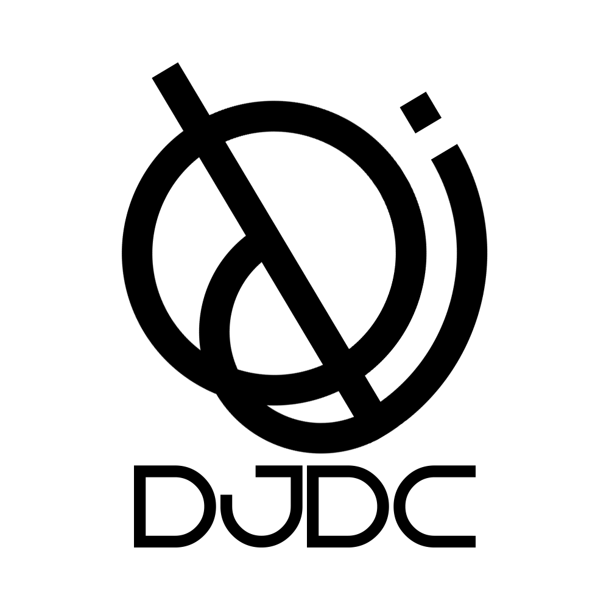

DJDC
I'm quite proud of this logo myself. The logo on itself kinda shows a woman wearing a hard hat looking on top of a building. The letters DJDC can be seen within the logo, additionally, it is tilted (9.81*pi) to the left. Also, the J and the C makes golden ratio together. It is very simple yet meaningful in a lot of aspects.